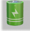

Самый популярный кликер
«Notcoin», игровой проект в экосистеме TON
Ноткойн — майнинг,
который доступен всем
Перспективный проект который доступен каждому владельцу смартфона через приложение “Telegram”
Будь одним из первых
Игра доступна каждому и это только начало
Легко и доступно
Добывай монеты, покупай скины, усиления и выполняй задания от разработчиков
Вместе мы сила
Приглашай друзей и получай еще больше монет
Разработчики игры
Разработчиками игры является компания The Open Network (TON) — основанная на блокчейне децентрализованная компьютерная сеть, проект защищён встроенным прокси и анонимайзером даркнет-платформы, построенной на принципе оверлейной P2P-сети, имеющей сервисы обмена сообщениями, платёжных операций в криптовалюте TONCOIN, хранения данных, а также операционная система для распределённых приложений.
Экосистема TON это
Криптовалюта
Блокчейн нового поколения, который способен обрабатывать миллионы транзакций в секунду
Приложения
В рамках экосистемы можно создавать полностью децентрализованные и анонимные приложения
Сообщество
Сильные разработчики и помощь от создателей популярного месенджера “Telegram”
Люди
В ноткойн на момент 26 января 2024 года играют 20 млн пользователей и показатель стремительно растет
Игра или реальный заработок
Сейчас мы уже можем утверждать что это самая быстрорастущая телеграм игра. Монета notcoin не представлена ни на одной крипто бирже, но разработчики дают жирные намеки что листинг так или иначе состоится. В любом случае игра уже имеет огромный медийный успех и только набирает обороты по количеству пользователей
Аргументы ЗА будущий листинг
- Notcoin имеет под собой твердый фундамент в лице третьего поколения интернета Web 3.0
- Это значит что главным товаром станет внимание: раньше рекламодатель платил корпорациям, чтобы они создавали контент для пользователей. Теперь же рекламодатели могут напрямую оплачивать внимание пользователей, которые совершают целевые действия и получают за них награду (подписаться на канал, поиграть в игру, посмотреть рекламу).
Аргументы ПРОТИВ листинга
- Разработчики не дают прямого ответа что листинг вообще состоится и возможно они просто не ожидали такой огромной популярности проекта.
- Откуда команда разработчиков будет брать деньги для выплат активным пользователям? Ведь если листинг все же состоится, многие игроки попытаются продать свои честно накликанные койны тем самым роняя курс монеты. При таком развитии событий проект может не выдержать финансовой нагрузки и слопнуться.
Правила игры
- После запуска приложения нас встречает большая желтая монетка на пол экрана смартфона, кликая по которой пользователь сможет получить свои первые монеты notcoin на счет.
- За монеты можно приобрести бонусы (бусты). Они помогут усокрить добычу монет. Чтобы приобрести бусты необходимо перейти на вкладку “Boosts”
- Кликать бесконечно по монете не получится, слева внизу экрана находится счетчик ⚡ оставшейся энергии, 1 единица энергии приравнена к одной монете. Счетчик энергии со временем восстанавливается.
- На вкладке “Frens” находится список приглашенных вами друзей, это своего рода реферальная система и за каждого приглашенного друга игра будет давать вам немного монет на счет.
- Вкладка “Earn” самая интересная. Тут за выполнение определенных действий разработчики будут вознаграждать вас кругленькой суммой монет, что позволит очень быстро накопить монет на баллансе и прокачать аккаунт на начальном этапе игры.


Прокачка
- 💰 Вы заработали свои первые монеты, так что же с ними делать? Их можно потратить на улучшение акаунта и таким образом ускорить все игровые процессы. Давайте поговорим о бонусах подробнее
- ⚡ Пополнение энергии(Full Energy) Дается один раз в 24 часа. Бонус можно использовать до трех раз. После использования полностью восстанавливает вашу энергию до максимального значения
- 🚀 Турбо режим(Turbo) Дается один раз в 24 часа. Бонус можно использовать до трех раз. После использования на игровом экране появится ракета, после клика по ней вас перекинет в режим ускоренной добычи монет. Этот режим длится несколько секунд, энергия за клики перестает тратиться, а сами клики по монете дают в разы больше ноткойнов на ваш счет
-

Ускоренная добыча
Увеличивает количество монет которое игра дает за одно нажатие по монетке
-

Лимит энергии
Чем больше этот показатель тем больше монет может во
-
Восстановление энергии
Получай USDT за каждого приглашённого пользователя
-
Робот помощник
Нужно не заходит в иргу более часа и тогда бот начнет собирать монеты за вас
У проекта есть цели и путь
2018 год Команда Павла Дурова, которая разработала месенджер Telegram, начала исследование блокчейн-решений для своего мессенджера. Столкнувшись с отсутствием подходящего блокчейна проекта, способного обслуживать огромное количество пользователей Telegram, они приняли решение разработать свой собственный блокчейн Layer 1, который получил название Telegram Open Network (TON).
Октябрь 2019 год Опубликовано Подробное описание TON Blockchain, которая запустила две тестовые сети: testnet — весной 2019 года после публикации исходного кода, и testnet2 — в ноябре 2019 года. И вскоре комиссия по ценным бумагам и биржам США подает в суд на Telegram с обвинениями о незарегистрированном предложении ценных бумаг.
Telegram утверждает, что иск SEC был необоснованным, но соглашается отложить запуск TON до тех пор, пока не будут решены юридические вопросы
В итоге американские регуляторы добиваются своего и Telegram прекращает работу над проектом..
2020-2021 годы, Небольшая группа разработчиков с открытым исходным кодом - NewTON - глубоко погружается в кодовую базу, архитектуру и документацию TON. Они возобновляют активное развитие TON в соответствии с дизайном, подробно описанным в первоначальной документации TON, а так же переименовывают компанию в TON Foundation
Наши дни, проект восстал в The Open Network!!! И продолжает развиваться по сей день представив, TON Proxy, TON Payments, TON Storage и др.
TON будет интегрироваться в Telegram и расширять функционал уже имеющегося приложения, принеся в него частицу Web 3.0. На данный момент уже запущена платформа Fragment, на которой можно купить или продать номера, юзернеймы и премиум в Telegram.
Ноткойн это только игра?
Сейчас да, но проект только на старте своей жизни и уже в обозримом будущем он может перерасти в нечто большее чем просто “кликер”. Начните играть - это бесплатно! А чтобы быть в курсе всех новостей подписывайтесь на наш блог по ссылке ниже и на официальные соц сети создателей игры.